-
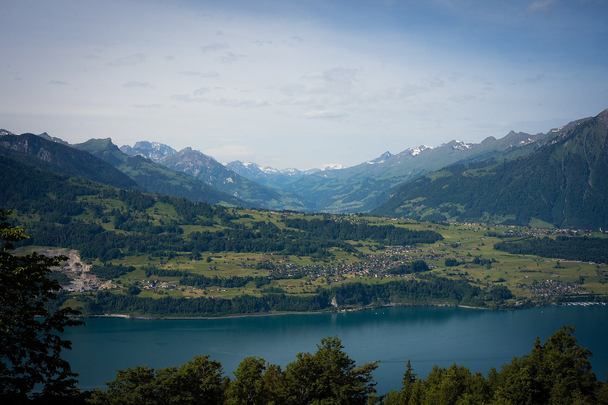
Wassertemperatur Thunersee heute: woher der Wert kommt
Die Wassertemperatur im Thunersee in 70 cm Tiefe, für die 8 erfassten Badeplätze, alle drei Stunden aktualisiert. Woher der Wert kommt und was er nicht aussagt.
Artikel lesen → -
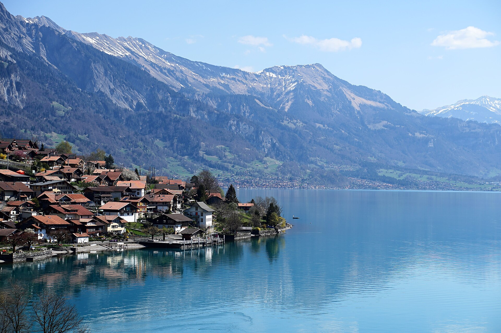
Wassertemperatur Brienzersee heute: woher der Wert kommt
Die Wassertemperatur im Brienzersee in 70 cm Tiefe, für die 4 erfassten Badeplätze, alle drei Stunden aktualisiert. Woher der Wert kommt und was er nicht aussagt.
-
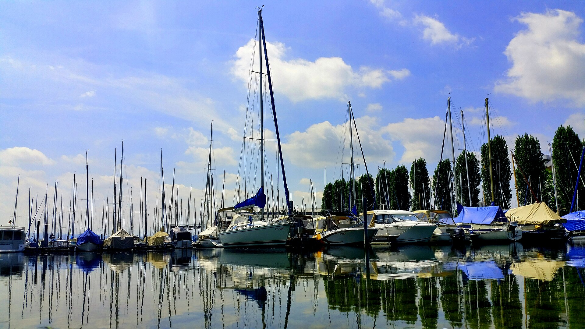
Wassertemperatur Bodensee heute: woher der Wert kommt
Die Wassertemperatur im Bodensee in 70 cm Tiefe, für die 12 erfassten Badeplätze, alle drei Stunden aktualisiert. Woher der Wert kommt und was er nicht aussagt.
-
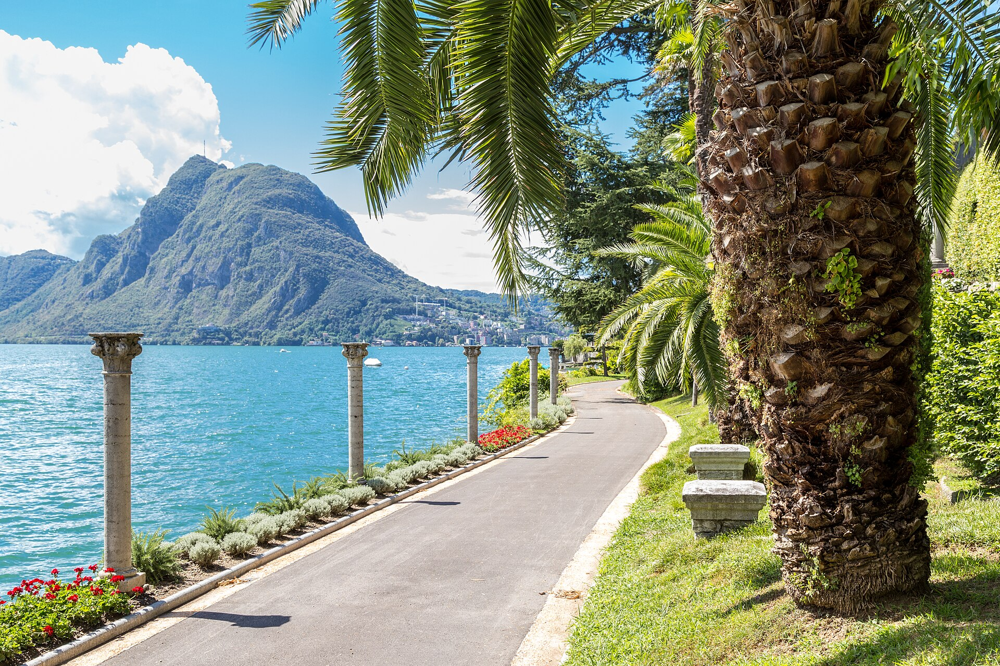
Wassertemperatur Luganersee heute, Badeplatz für Badeplatz
Die Wassertemperatur im Luganersee in 70 cm Tiefe, vor jedem der 14 erfassten Badeplätze, alle drei Stunden aktualisiert. Woher der Wert kommt und was er nicht aussagt.
-
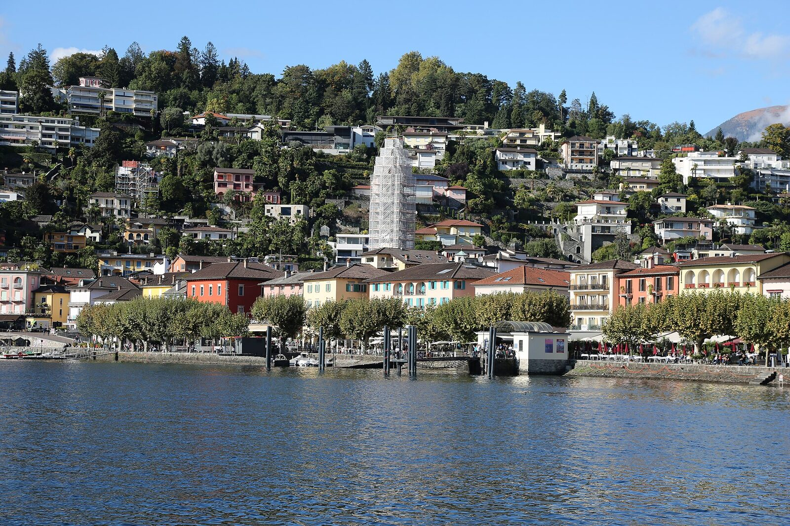
Wassertemperatur Lago Maggiore heute: woher der Wert kommt
Die Wassertemperatur im Lago Maggiore in 70 cm Tiefe, für die 7 erfassten Badeplätze, alle drei Stunden aktualisiert. Woher der Wert kommt und was er nicht aussagt.
-
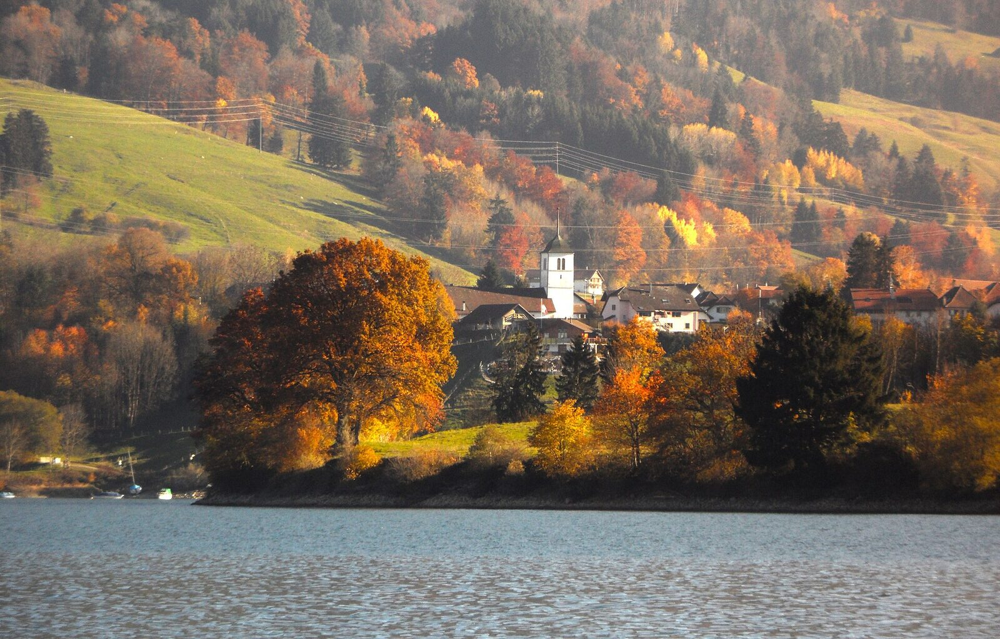
Wassertemperatur Greyerzersee heute: woher der Wert kommt
Die Wassertemperatur im Greyerzersee in 70 cm Tiefe, für die 5 erfassten Badeplätze, alle drei Stunden aktualisiert. Woher der Wert kommt und was er nicht aussagt.
-
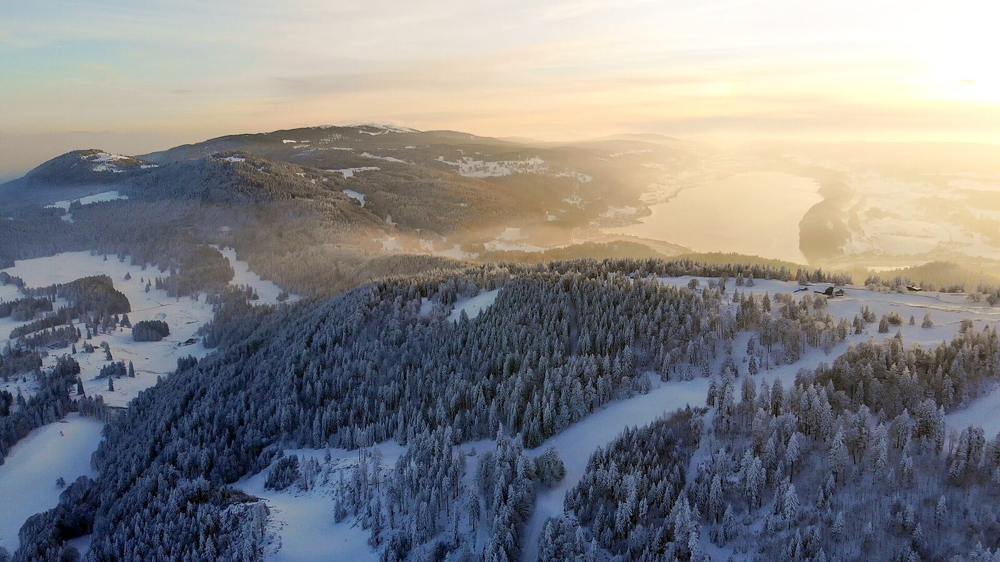
Wassertemperatur Lac de Joux heute, Badeplatz für Badeplatz
Die Wassertemperatur im Lac de Joux in 70 cm Tiefe, vor jedem der 2 erfassten Badeplätze, alle drei Stunden aktualisiert. Woher der Wert kommt und was er nicht aussagt.
-
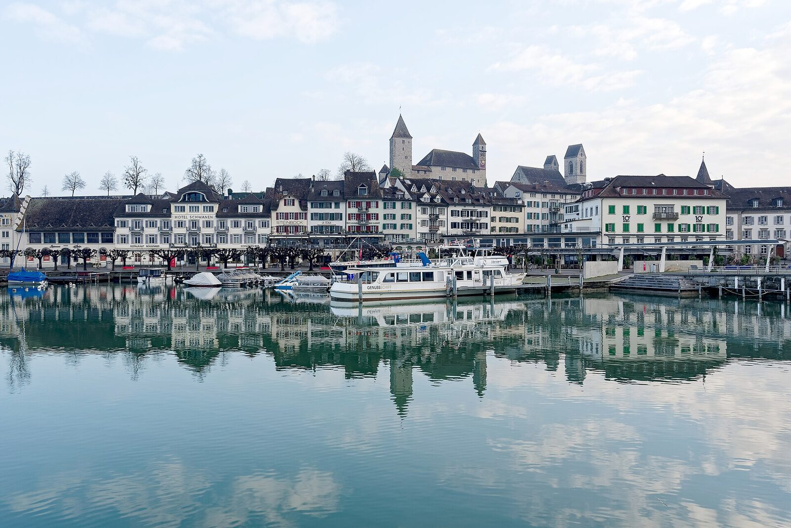
Wassertemperatur Zürichsee heute, Badeplatz für Badeplatz
Die Wassertemperatur im Zürichsee in 70 cm Tiefe, vor jedem der 20 erfassten Badeplätze, alle drei Stunden aktualisiert. Woher der Wert kommt und was er nicht aussagt.
-
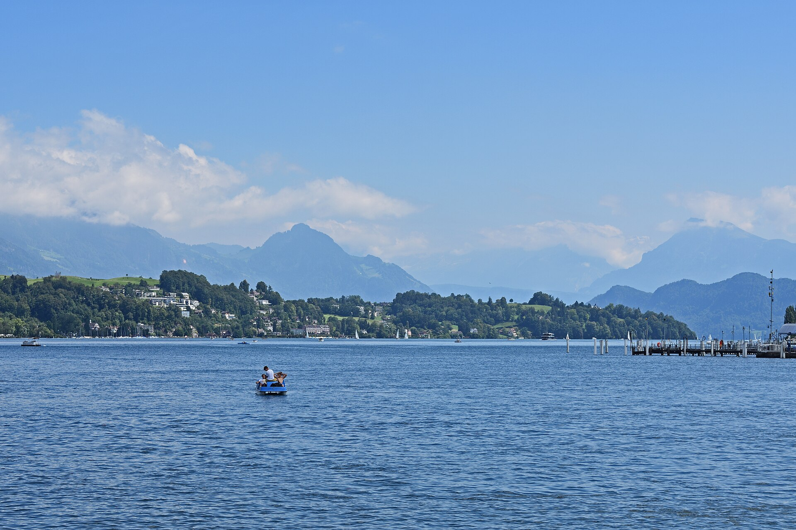
Wassertemperatur Vierwaldstättersee heute, Badeplatz für Badeplatz
Die Wassertemperatur im Vierwaldstättersee in 70 cm Tiefe, vor jedem der 18 erfassten Badeplätze, alle drei Stunden aktualisiert. Woher der Wert kommt und was er nicht aussagt.
-
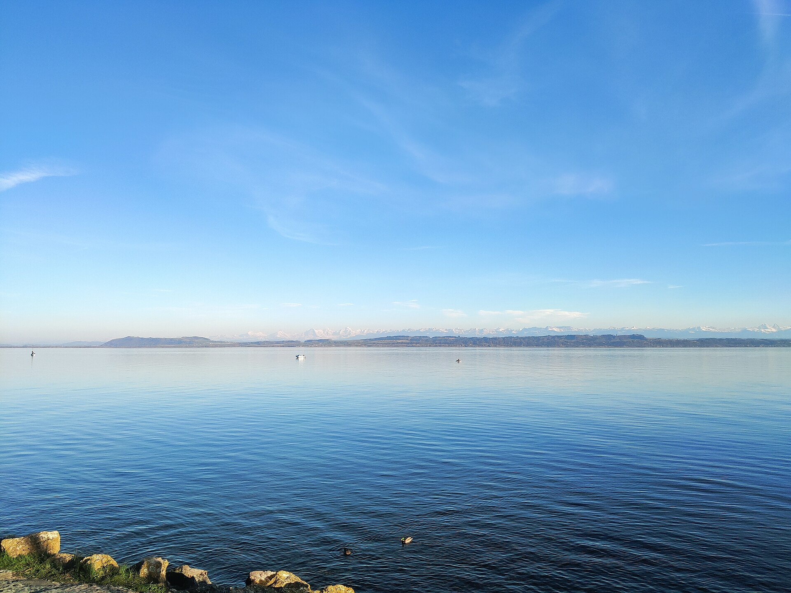
Wassertemperatur Neuenburgersee heute, Badeplatz für Badeplatz
Die Wassertemperatur im Neuenburgersee in 70 cm Tiefe, vor jedem der 15 erfassten Badeplätze, alle drei Stunden aktualisiert. Woher der Wert kommt und was er nicht aussagt.
-
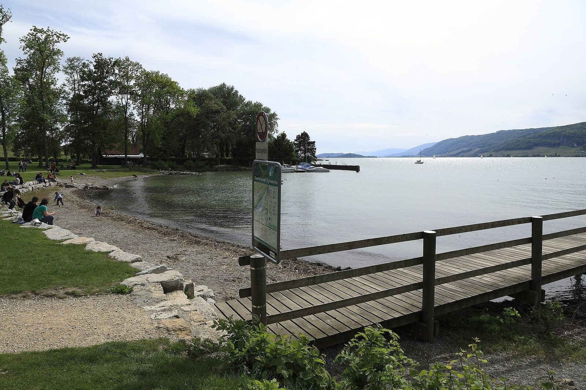
Wassertemperatur Bielersee heute, Badeplatz für Badeplatz
Die Wassertemperatur im Bielersee in 70 cm Tiefe, vor jedem der 7 erfassten Badeplätze, alle drei Stunden aktualisiert. Woher der Wert kommt und was er nicht aussagt.
-
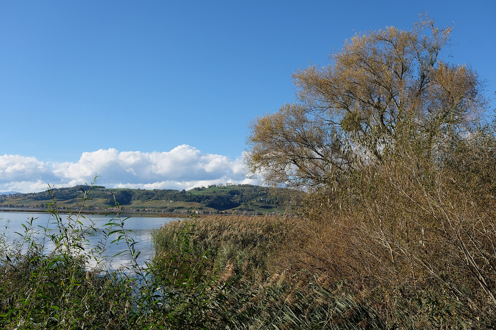
Wassertemperatur Murtensee heute, Badeplatz für Badeplatz
Die Wassertemperatur im Murtensee in 70 cm Tiefe, vor jedem der 4 erfassten Badeplätze, alle drei Stunden aktualisiert. Woher der Wert kommt und was er nicht aussagt.
-

Winterbaden im Neuenburger-, Bieler- und Murtensee: Badeplätze und Saunas
Winterbaden im Neuenburgersee, Bielersee und Murtensee: die Zeitregel der SLRG, das Wasser von heute Badeplatz für Badeplatz, die erfassten Badeplätze und die Saunas am Wasser.
-

Winterbaden in Zürich: Badeplätze am See, Wasser von heute und Saunas
Winterbaden im Zürichsee und Greifensee: die Zeitregel der SLRG, das Wasser von heute Badeplatz für Badeplatz, die erfassten Badeplätze und die Saunas am See.
-
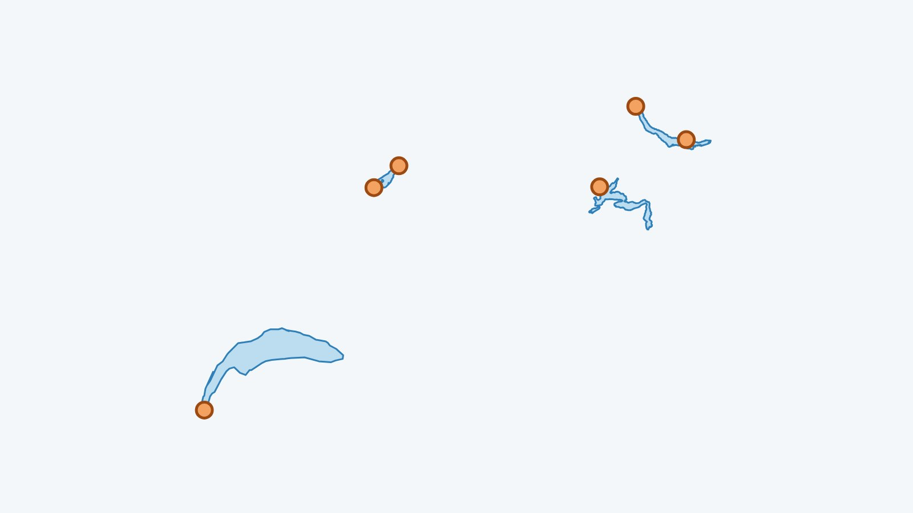
Saunaboote und Saunaflösse in der Schweiz: 6 Adressen auf vier Seen
Saunaboote und Saunaflösse auf Genfersee, Bielersee, Zürichsee und Vierwaldstättersee: 6 Adressen mit Abfahrtsort und Buchungsseite.
-
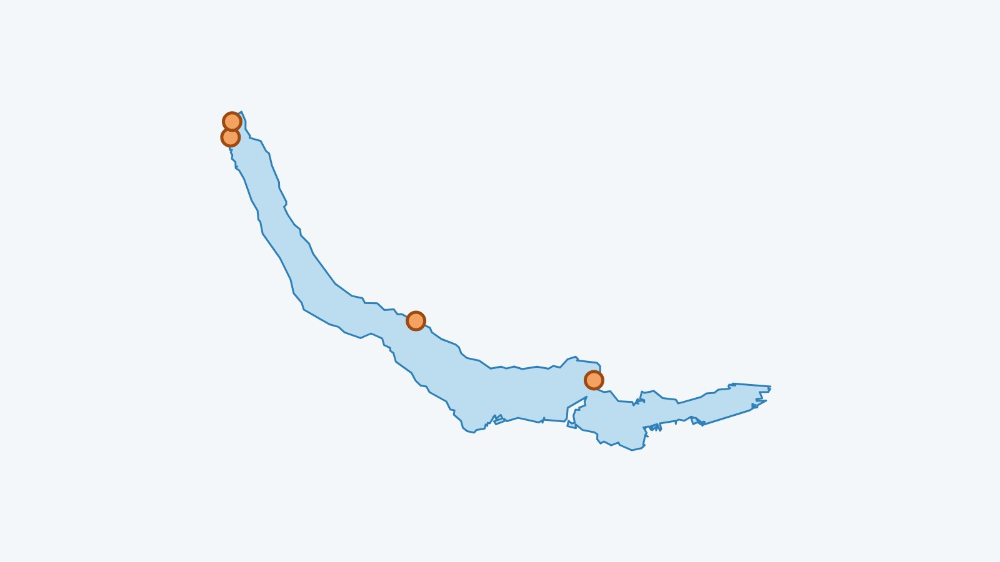
Sauna am Zürichsee: 4 Adressen von der Stadt bis Rapperswil
Die 4 Saunas am Zürichsee, die Mein See erfasst: Sauna am See im Seebad Enge, Seesauna Stäfa und Saunaboote. Ort, Saison und Link zur Website.
-

Saunas am Genfersee: alle 11 Adressen von Genf bis Vevey
Die 11 Saunas am Genfersee, die Mein See erfasst: Jurten, Fasssaunas, ein Saunaboot, historische Bäder. Saison, Ort und Link zur Website.
-

Winterbaden im Genfersee: gut starten in Genf und Lausanne
Wie lange im Wasser bleiben, wie hineingehen, wo baden und sich aufwärmen in Genf und Lausanne: der Leitfaden zum Winterbaden im Genfersee, mit dem Tageswasser Badeplatz für Badeplatz.
-

Badewasserqualität am Genfersee: wie man weiss, ob man baden kann
Wer das Wasser der Badeplätze am Genfersee untersucht, wie man die Einstufungen liest und warum eine Analyse vom August nichts über das Wasser im November sagt.
-

Badeplätze am Genfersee auf der französischen Seite: von Évian bis Chens-sur-Léman
Die Badeplätze am französischen Ufer des Genfersees, von Meillerie bis Chens-sur-Léman, mit der Wassertemperatur von heute, den Restaurants und den Wake-Schulen in der Nähe.
-

Afterdrop: warum man nach einem Winterbad noch mehr friert und wie man sich aufwärmt
Warum der Körper nach dem Ausstieg noch etwa zehn Minuten weiter auskühlt, wie man sich umzieht, was man trinkt und was man besser vermeidet, etwa die heisse Dusche.
-
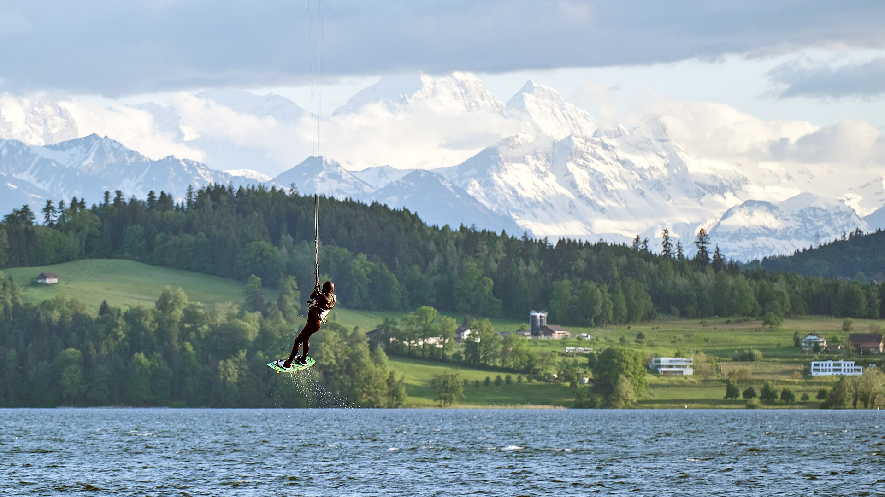
Kitesurfen, Windsurfen und Wingfoilen auf dem Genfersee: der richtige Wind und die richtigen Spots
Welche Windstärke fürs Kitesurfen, Windsurfen und Foilen auf dem Genfersee, warum die Bise die besten Downwinds macht und wo man mieten oder lernen kann.
-
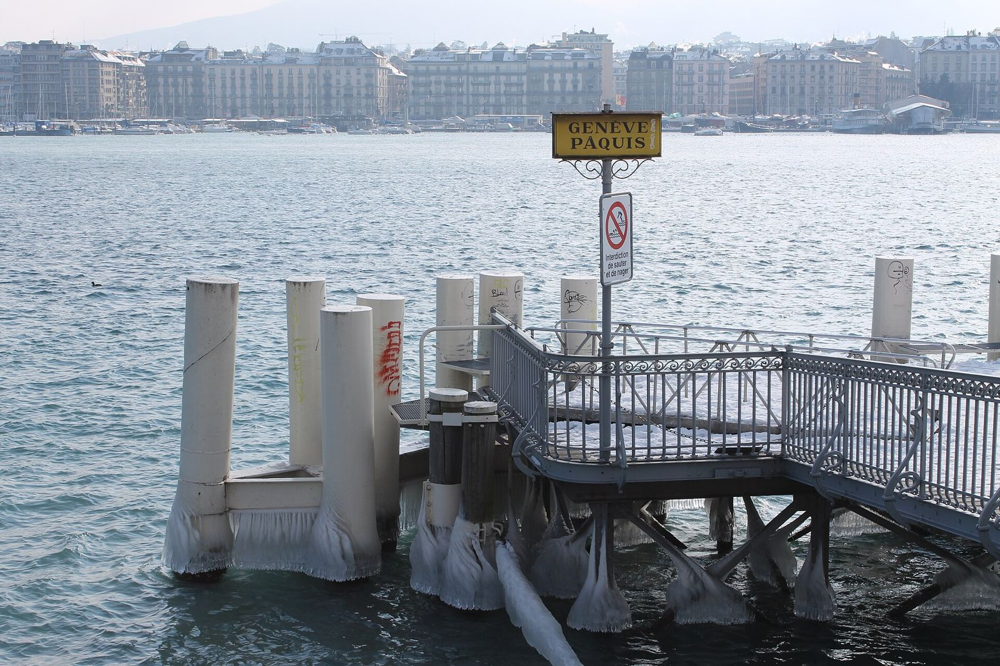
Die Bise auf dem Genfersee: was sie fürs Baden, Paddeln und Kiten ändert
Woher die Bise kommt, wie man sie erkennt und ab wann sie das Baden und Paddeln stört, während Kitesurfer, Windsurfer und Foiler auf sie warten.
-

Ausrüstung fürs Winterbaden: die vollständige Liste vor dem Gang an den Genfersee
Mütze, Neopren-Schuhe und -Handschuhe, Schwimmboje, Unterlage zum Umziehen, Cape und Thermosflasche: alles, was man für ein Winterbad im Genfersee mitnehmen sollte, und warum.
-
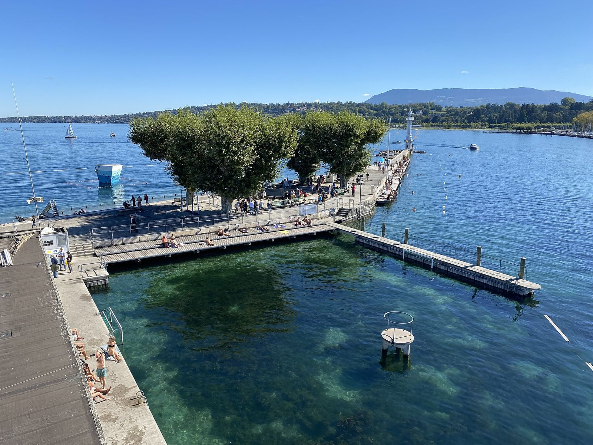
Wo in Genf baden: die Badeplätze des Kantons, einer nach dem anderen
Von den Bains des Pâquis bis Hermance: die Genfer Badeplätze am Genfersee mit ihren Buvetten und der Wassertemperatur von heute für jeden.
-

Paddeln auf dem Genfersee: wann der See ruhig genug ist und wo man mieten kann
Ab welchem Wind das Paddeln auf dem Genfersee schwierig wird, wie man Böen liest und die Paddle-Verleiher von Genf bis Saint-Gingolph.
-

Temperatur des Genfersees: woher die Zahlen kommen und warum sie schwanken
Wie das Wasser des Genfersees in 70 cm Tiefe vor jedem Badeplatz berechnet wird, warum es in zwei Tagen mehrere Grad verlieren kann und wo man es live sieht.
-

Wakeboard, Wakesurf und Wasserski auf dem Genfersee: die Schulen und Clubs
Von Pregny bis Thonon: die Schulen und Clubs, die das Boot für Wakeboard, Wakesurf und Wasserski rausnehmen, und warum es einen glatten See braucht.
-

Buvetten und Restaurants am Genfersee: unsere Adressen mit den Füssen im Wasser
Die Terrassen am Wasser in Genf, an der Côte, in Lausanne, an der Riviera und am französischen Ufer, mit ihren Öffnungssaisons.
-

Kälteschock: die ersten 90 Sekunden im kalten Wasser des Genfersees
Was der Körper beim Einstieg in 10 °C kaltes Wasser tut, warum man nicht springen sollte, wie man in der ersten Minute atmet und warum man vor dem Start zum Arzt geht.